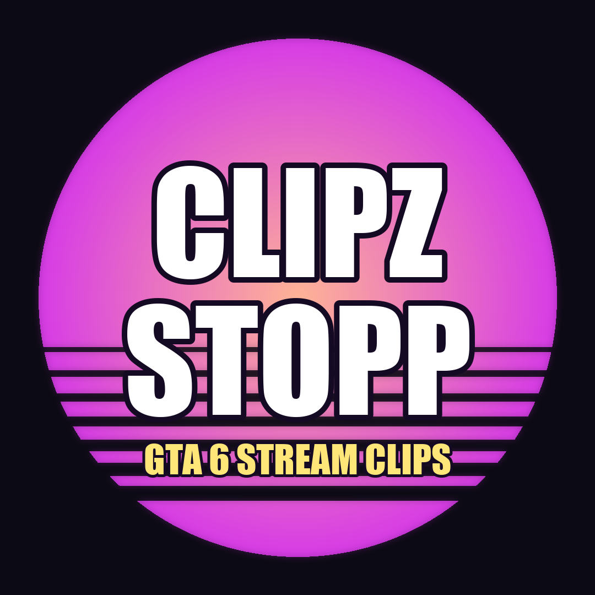

The best moments from GTA 6 streams, in under a minute.
Clipzstopp is a clip channel. We watch long GTA 6 livestreams and post the funniest and most surprising moments as short vertical videos.
Clipzstopp Uploader
Clipzstopp Uploader is a small private desktop tool used only by the Clipzstopp team. It:
1. Cuts clips
Finds the strongest moments in a stream and makes 15–60 second vertical clips with captions.
Finds the strongest moments in a stream and makes 15–60 second vertical clips with captions.
2. Publishes them
Uploads each finished clip, with its caption and hashtags, to the Clipzstopp accounts on TikTok, Instagram and YouTube.
Uploads each finished clip, with its caption and hashtags, to the Clipzstopp accounts on TikTok, Instagram and YouTube.
3. Nothing else
It only posts to accounts we own and have signed into ourselves. It does not read, store or post anything for other users.
It only posts to accounts we own and have signed into ourselves. It does not read, store or post anything for other users.
Find us
Instagram: @clipzstopp
Clips feature streamers whose creators run official clipping programs. All rights to the original streams belong to their creators.